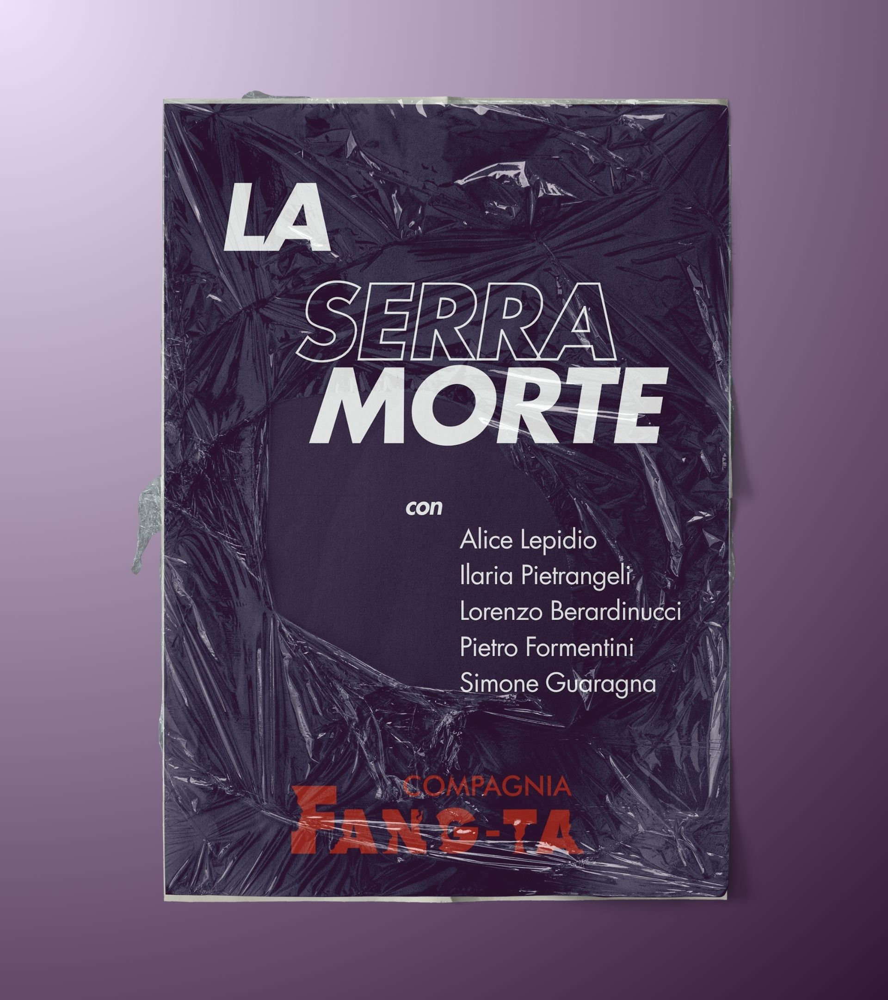
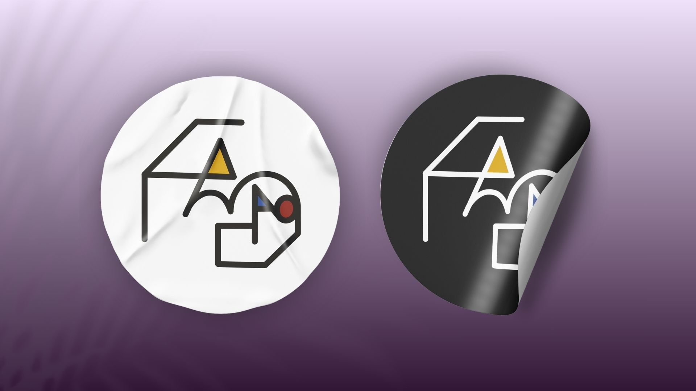
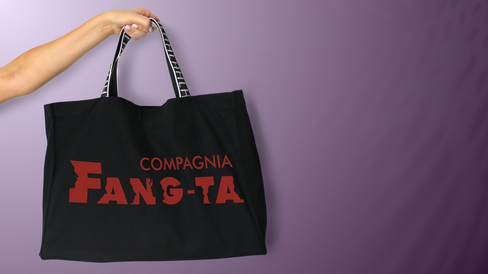
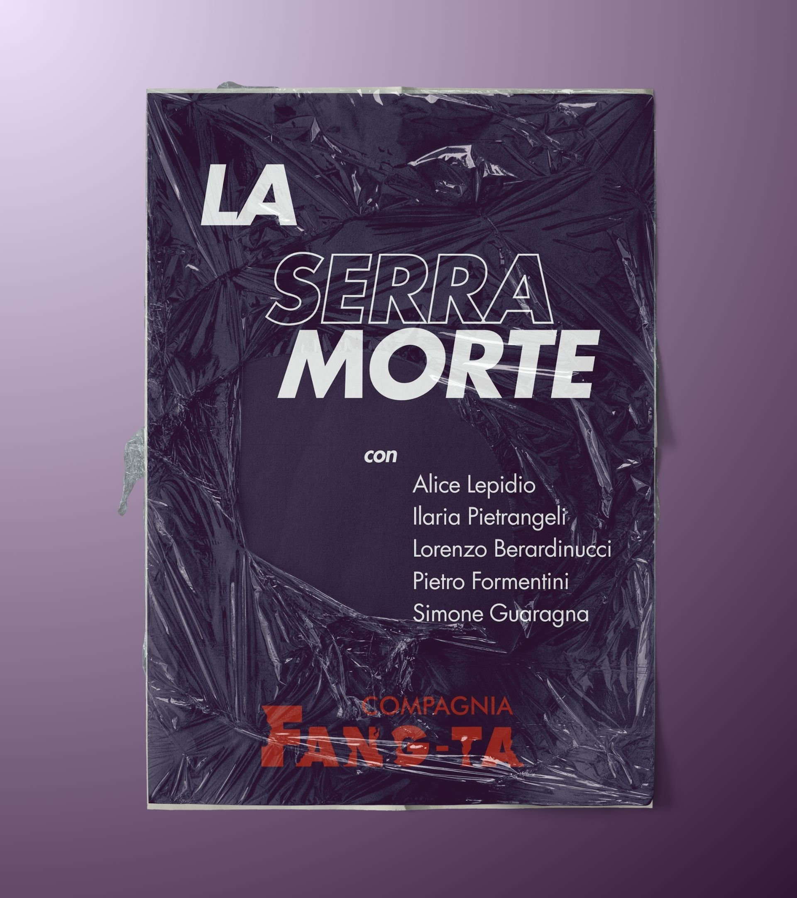
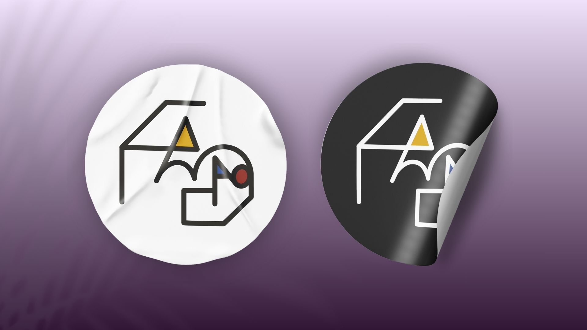
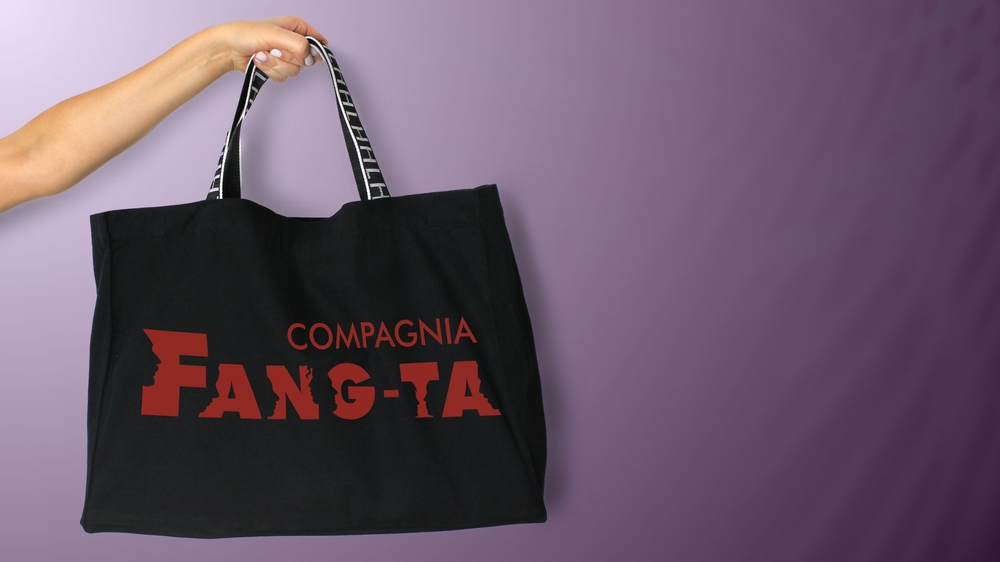

FANG-TA
Logo design e branding
Fang-ta è nata durante il percorso di studi, ma oggi è molto di più: è un progetto teatrale Under35 che crede nel potere delle storie, dell’amicizia e del palco. Per loro ho creato due versioni di logo – una per i social e una per le locandine – accomunate da un’unica anima: il senso di appartenenza. Il concept visivo celebra la forza del gruppo e l’identità condivisa, in equilibrio tra gioco e profondità, proprio come i loro spettacoli.